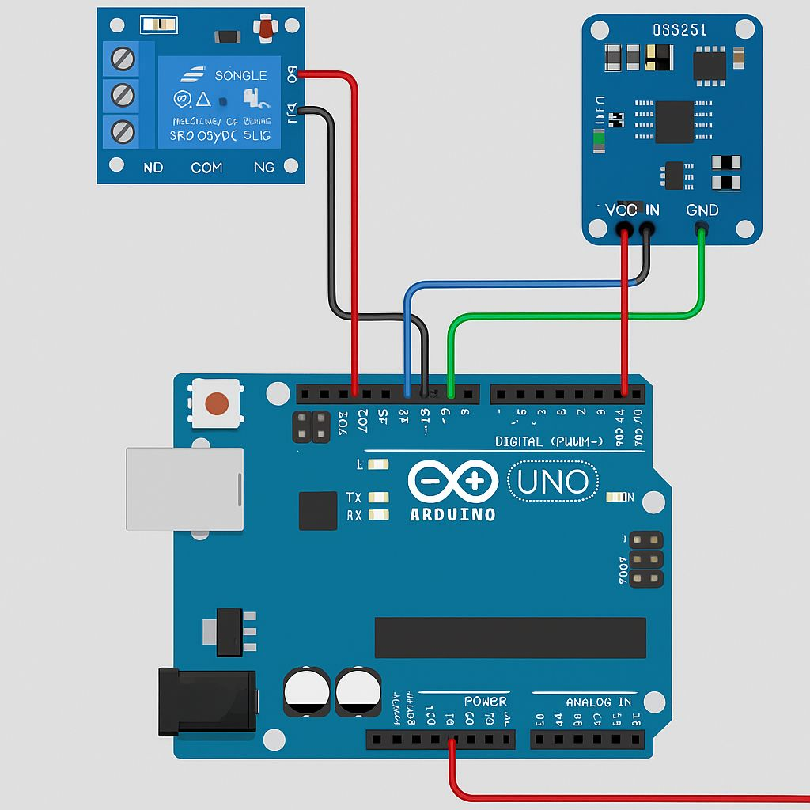
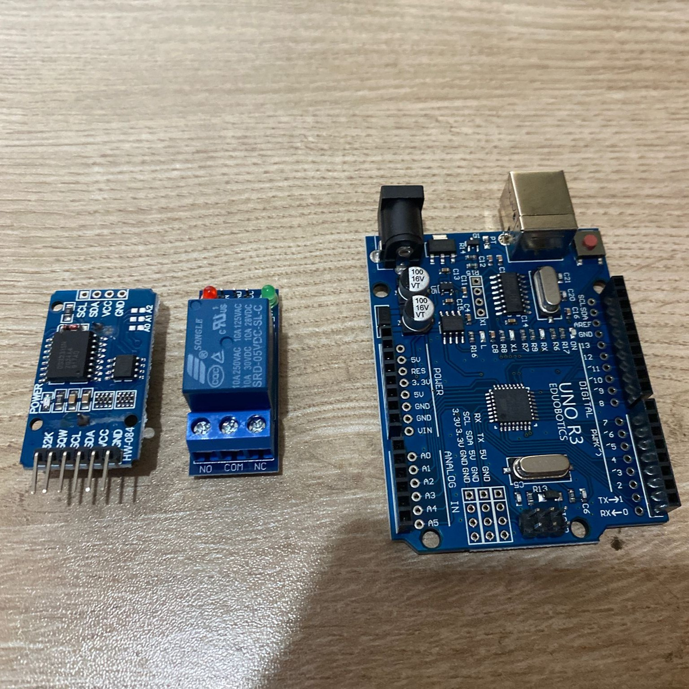

Problem
Küçük ölçekli sera uygulamalarında sulamanın belirli zamanlarda manuel müdahaleye ihtiyaç duymadan yapılması hedeflenmiştir. Proje, zaman tabanlı otomasyon mantığını uygulamak ve röle üzerinden harici bir yükün kontrolünü deneyimlemek amacıyla geliştirilmiştir.
Sistem Mimarisi
Arduino Uno, DS3231 RTC modülünden anlık saat bilgisini okuyarak yazılımda tanımlanan sulama zamanı ile karşılaştırır. Koşul sağlandığında röle modülü tetiklenir ve pompa ya da vana kontrolü için çıkış üretilir. Bu yapı giriş, karar verme ve çıkış adımlarından oluşan temel bir otomasyon döngüsü oluşturur.
Çalışma Mantığı
RTC modülü sistem kapalıyken bile zaman bilgisini korur.
Arduino yazılımı mevcut saat ile sulama zamanını karşılaştırır.
Uygun koşul oluştuğunda röle çıkışı aktif edilir.
Belirlenen süre sonunda sistem çıkışı kapatılır ve bekleme moduna döner.
Test ve Sonuç
Sistem, RTC modülünden alınan zaman bilgisine göre belirlenen sulama saatlerinde röle çıkışını aktif edecek şekilde test edildi. Arduino, DS3231 modülünden okunan mevcut saat bilgisini yazılımda tanımlanan sulama zamanı ile karşılaştırdı. Koşul sağlandığında röle çıkışı aktif edildi, belirlenen süre tamamlandığında ise çıkış kapatılarak sistem bekleme durumuna geçti.
Bu test sonucunda zaman tabanlı kontrol mantığı, röle ile yük kontrolü ve mikrodenetleyici tabanlı karar verme yapısı uygulanmış oldu. Sistem, ileride toprak nem sensörü eklenerek yalnızca zamana bağlı değil, sensör geri beslemeli kapalı çevrim bir sulama sistemine dönüştürülebilir.
Proje Çıktıları
- DS3231 RTC modülü ile zaman bilgisinin okunması
- Belirlenen zamanda röle çıkışının kontrol edilmesi
- Pompa veya vana sürmeye uygun temel kontrol döngüsü
- Arduino C/C++ ile koşul tabanlı otomasyon algoritması
- Geliştirilebilir sensör-actuator mimarisi
Bu Projede Ne Öğrendim?
Bu projede zaman tabanlı kontrol yapısını, RTC modülünün mikrodenetleyici ile haberleşmesini ve röle üzerinden harici bir yükün nasıl kontrol edilebileceğini uygulamalı olarak deneyimledim. Ayrıca bir otomasyon sisteminde giriş verisi, karar verme algoritması ve çıkış kontrolünün ayrı ayrı tasarlanması gerektiğini öğrendim.
Proje, otomasyon sistemlerinde yalnızca devre kurmanın değil; sistemin hangi koşulda çalışacağını, ne kadar süre aktif kalacağını ve hata durumlarında nasıl güvenli kalacağını düşünmenin de önemli olduğunu gösterdi.
Görseller



Geliştirme Notları
Mevcut sürümde sistem zaman tabanlı çalışmaktadır. Bu yaklaşım, temel otomasyon mantığını göstermek için yeterlidir; ancak gerçek sera koşullarında toprak nemi, su seviyesi ve enerji verimliliği gibi değişkenlerin de izlenmesi gerekir. Bu nedenle proje, sonraki aşamada sensör geri beslemeli daha akıllı bir yapıya genişletilebilir.
Gelecek Geliştirmeler
- Toprak nem sensörü ile geri beslemeli sulama kontrolü
- Su deposu seviyesi takibi
- LCD veya OLED ekran ile anlık durum gösterimi
- Daha verimli ve güvenli güç yönetimi
- ESP32 ile kablosuz veri izleme